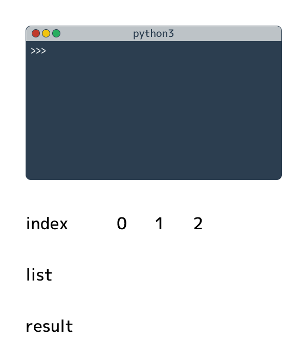

再構築中です。
このサイトではプログラミング言語「Python」を豊富な図とシンプルな説明で学んでいただきます。 プログラミングの初心者にとって言葉で延々と説明しても理解に時間を要するため、 以下のようなアニメーションで直感的に理解してもらうことを心がけています。

日曜大工で作る犬小屋を作ることも、何百何千の人々で建設する巨大なビルも作ることも、 どちらも「建築」の範疇に入ります。 犬小屋であれば難しい物理計算など必要なく、犬小屋の簡単な構造とノコギリやハンマーの使い方さえ知っていれば作れます。 一方、巨大ビルを作るには専門知識を持った設計者や熟練した職人が必要となります。
プログラミングも建築に似ており、 犬小屋のような小さなアプリケーションを作るにはさほど深い知識は必要ありません。 犬小屋は「屋根と壁、入り口がある」という簡単な構造を知っていて、ノコギリやハンマーを素人レベルで使えれば作れます。 小さなプログラムもこれと同じで、プログラミングの初歩的な知識があれば作れてしまいます。
犬小屋のような簡単なプログラムを作るための知識を得る、それがこのサイトの目的です。 そして興味がある人向けに、もうちょっと発展したロッジを作る程度の知識まで解説します。
ハンマーやノコギリの使い方は教科書で学ぶものではありません。 どう使うかということを「見て」、それを実際に「使う」ことで「学ぶ」ことができます。 プログラミングも本で座学するだけでなく、実際にコードを書いて、動かすことで上達します。 ゆっくりでもいいので、実際に手を動かしながら本を読み進めていってもらえれば幸いです。
一級建築士になるには勉強が必要なように、一流の本業プログラマになるためには適切な勉強が必要になることもあります。 ただ、プログラミングをやりたい多くの人は、まるで「犬小屋を作るのに構造力学の勉強が必要」だと考えるように、 プログラミングを難しく捉えすぎているかもしれません。
犬小屋なんて適当に試行錯誤しながら作れば、なんとか形になります。 プログラミングもそれと同じで、見よう見まねで書いていれば、簡単なものであれば作れます。 難しいことは考えずにとりあえずやってみるのが一番の近道なのではないかと思います。